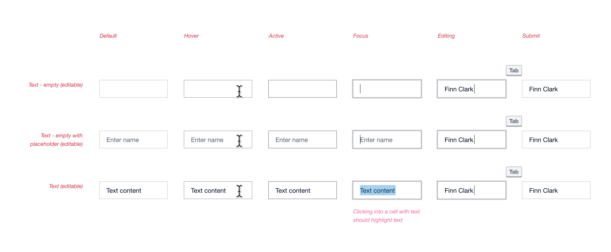

Home
XUI design system
XUI is Xero’s product design system consisting of fundamentals, components, patterns, and guidance.
In a nutshell
XUI (Xero User Interface) as a design system helps product teams at Xero design and build interfaces quickly and consistently to help create beautiful, high-quality, cohesive experiences. XUI is made up of multiple parts:
- Fundamental elements (e.g. colors and icons)
- Functional React components
- Documented pattern and usage guidance
- Dedicated support from a specialised team
For over 5 years, I've played a critical role in growing and maintaining XUI, as well as supported teams in adopting, using, and contributing to the design system.
Fundamental elements
XUI's fundamentals define the Xero product visual language and are a foundation for building up other user interface components, patterns, and pages. The fundamentals include (but are not limited to) layout and spacing, typography, colours, and icons.
I am going to highlight 3 areas of the XUI fundamentals which I helped evolve into more mature pieces of the design system.
Redesigned size and spacing system
I helped develop and migrate XUI from a dated sizing and spacing approach (increments of 5px) to a scalable and systematic model (multiples of 4px).
This work involved completely redesigning components and layout structures, and introduced a brand new method to nest components systematically within each other using multiple size variants.
Colour contrast enhancements
As part of an ongoing effort to improve the accessibility of XUI, an early project was to overhaul the entire colour system, ensuring the passing of WCAG success criteria.
This process invloved reviewing colour decisions, identifying areas of improvement, and implementing the changes into the design system.
New icons
Throughout my time at Xero, I've designed and introduced many icons into XUI, as well as written guidance and supported other designers in contributing their own icons into the design system.
Before kicking off
To set ourselves up for success, we wanted to get an understanding of what we needed to learn.
What we knew:
- Multiple teams at Xero needed a shared component solution
- We could learn from existing Xero experiences
- We could take inspiration from other design system's components
What we needed to find out:
- Where were all the places in Xero that this problem existed
- What is and isn't working with the existing legacy experiences
- What does success look like for creating this component
The approach
This process followed a typical double-diamond approach, where I lead the discovery, design, and testing of the component solution, with support from the rest of the XUI team.
Discovery
Our discovery process included extensive desk research both inside and outside of Xero.
Within Xero, I reviewed legacy experiences, as well as bespoke solutions that teams had been exploring outside of the design system. Outside of Xero, I investigated other design system solutions, as well as 3rd party components that attempted to solve similar problems.
Defining features
Our discovery work was used to paint a picture of potential exeriences surrounding the use of the editable table component. Synthesising this desk research helped us articulate which features would be necessary to design and build into the component.
We collaborated with product teams to align on what was most valuable to prioritise creating, knowing that some experiences had more pressing needs than others. This outlined a shortlist (which was actually pretty long) of features to design and build.
Refining the design
The design exploration and refining process was where most of the time of this project took place. I first established a rough concept for the look, feel and layout, using the existing XUI fundamentals to inform elements like colours, text treatment, and dimensions, and used accessibility guidance to inform other design decisions, for example: touch targets.
I systematically went through each of the outlined features individually and created design solutions for every one.
I was able to refine 15+ component features by having regular discussions with experts, and ensuring everything was purposeful, cohesive, and usable. It was a rigorous process involving a lot of collaboration with other teams along the way.
A non-exhaustive list of the component features I designed:
-
Cell types
- Text input, read-only, select box, autocompleter, icon button
- Table and cell validation
- Adding and removing rows
- Showing and hiding columns
- Responsive behaviour
- Width API
- Drag and drop
- Keyboard navigation experience
Testing
I worked with the engineers to plan how we would build and test the component’s usability. We decided to build a sacrificial prototype while the design process was ongoing, so that we could test the usability with users to help us make informed design decisions as the designs got refined. This also allowed us to understand the technical limitations we had.
We ran three rounds of guerilla-style usability testing sessions at various stages of the design process, focusing on different goals and assumptions. These testing sessions helped us immensely in understanding how users understand and interact with table-style components, and ultimately shaped the final solution.
We refined the component further after testing, making sure it was fully accessible, responsive, and able to be localised.
Since releasing, the editable table component has been used in products all across Xero and we’ve been able to learn from customer feedback to further iterate on the component to have additional features and be more robust for different experiences.
Documentation
Usage guidance
I wrote usage guidance documentation to enable designers and engineers to successfully implement the component within their products. This documentation was surfaced in our internal XUI Guide website which houses all design system guidance.
The guidance gives high level implementation tips, as well as detailed information on specific editable table features.

Some things I learnt
-
Collaboration is the key to success
By consistently checking in with interested teams throughout the planning, designing, and building phases of this project, we were able to align on decisions and generate excitement for the solution.
-
Iteratively testing pays dividends
By testing assumptions throughout the design process, we were able to build confidence in our direction and unblock decisions.
-
Design for the 80%
Supporting every feature under the sun for a complex component is impossible and not necessary. By intentionally designing some flexibility into the component, we were able to enable teams to stretch the functionality if needed. For example: We made it possible for teams to create their own cell types.